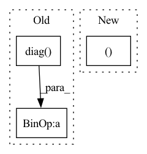

Pattern ID :36092
Before Change
M = (
np.diag(1 / np.sqrt(self.Bs[1]))
@ self.R_12.T
@ np.diag( 1 / self.Bs[0])
@ self.R_12
@ np.diag(1 / np.sqrt(self.Bs[1]))
)
return M, None
After Change
def _two_view_evp(self, views):
R = [pca.transform(view) for pca, view in zip(self.principal_components, views)]
C = R[1].T @ R[0] @ R[0].T @ R[1]
return C, None
def _multi_view_evp(self, views):
R = [pca.transform(view) for pca, view in zip(self.principal_components, views)]
D = block_diag(In pattern: SUPERPATTERN
Frequency: 3
Non-data size: 3
Instances Fragment ID: 102361721
Project Name: jameschapman19/cca_zoo
Commit Name: a1ba93b137f04fbe46e9c284d5c1e8c4df56ba94
Time: 2022-10-10
Author: james.chapman.19@ucl.ac.uk
File Name: cca_zoo/models/_rcca.py
M Class Name: rCCA
N Class Name: rCCA
M Method Name: _two_view_evp(2)
N Method Name: _two_view_evp(3)
M Parent Class: _BaseCCA
N Parent Class: _BaseCCA
M File Name: cca_zoo/models/_rcca.py
N File Name: cca_zoo/models/_rcca.py
M Start Line: 137
M End Line: 147
N Start Line: 136
N End Line: 138
Before Change
rowsum = adj.sum(1)
d_inv = torch.pow(rowsum, order).flatten()
d_inv[torch.isinf(d_inv)] = 0.
d_mat_inv = torch.diag( d_inv)
adj = d_mat_inv @ adj @ d_mat_inv
return adj
After Change
d_inv[torch.isinf(d_inv)] = 0.
self_loop_idx = torch.stack((
torch.arange(adj.shape[0], device=adj.device),
torch.arange(adj.shape[0], device=adj.device)
))
self_loop_val = torch.ones_like(self_loop_idx[0], dtype=adj.dtype)
indices = torch.cat((self_loop_idx, adj.indices()), dim=1)
values = torch.cat((self_loop_val, adj.values())) Fragment ID: 102361727
Project Name: thudm/grb
Commit Name: c89e21076dc05d1edb87dfe2eff20c29ba6bd0c1
Time: 2021-12-04
Author: geisler@in.tum.de
File Name: grb/utils/normalize.py
M Class Name: AnonimousClass
N Class Name: AnonimousClass
M Method Name: GCNAdjNorm(2)
N Method Name: GCNAdjNorm(2)
M Parent Class:
N Parent Class:
M File Name: grb/utils/normalize.py
N File Name: grb/utils/normalize.py
M Start Line: 37
M End Line: 42
N Start Line: 37
N End Line: 49
Before Change
A = confusion_matrix(labels, outputs)
if np.sum(A) > 0:
accuracy = np.sum(np.diag( A) ) / np.sum(A)
else:
accuracy = float("nan")
After Change
m = _metrics_from_confusion_matrix(labels, outputs, num_classes)
return m["macro_acc"], m["acc"]
def QRS_score(
rpeaks_truths: Sequence[Union[np.ndarray, Sequence[int]]], Fragment ID: 102361711
Project Name: deeppsp/torch_ecg
Commit Name: 285eb710e3d419b5e4e5173b8f02faefb83c252a
Time: 2022-03-30
Author: wenh06@gmail.com
File Name: torch_ecg/utils/utils_metrics.py
M Class Name: AnonimousClass
N Class Name: AnonimousClass
M Method Name: accuracy(3)
N Method Name: accuracy(3)
M Parent Class:
N Parent Class:
M File Name: torch_ecg/utils/utils_metrics.py
N File Name: torch_ecg/utils/utils_metrics.py
M Start Line: 302
M End Line: 310
N Start Line: 506
N End Line: 508